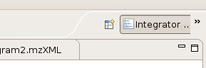
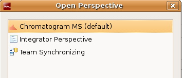

Perspectives
A perspective is a predefined arrangement of the main editor and several views. The perspective can be selected in the upper right part of the software.
Select perspectives:

Open a perspective:
